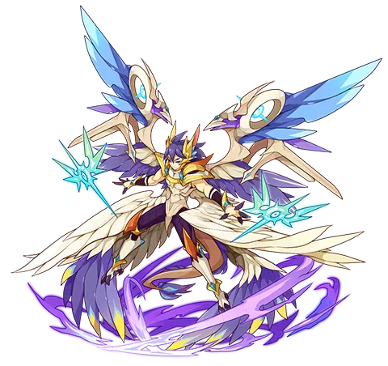

翼系

别称：鸡毛王
虹起烟霄
势展虹霓，翼承重霄。
视自身魔攻等级为正面发动攻击，根据自身状态获取魔攻等级并令对方损失PP。
驱散非疾风的天气，成功则删除对方PP且抵挡后手攻击，失败则增幅技能威力。
未受先手伤害时赋予自身负面强化并攻击对方队友，否则回复自身和队友精力。
重明万方
日月璧成，光及四海。
获取短暂异常免疫，回复精力的同时掠夺敌方护盾。
根据自身状态令对方损失PP并陷入混乱，混乱成功时吸取对方PP，否则干扰敌方命中。
不携带行空驭气时，会获得额外的生存能力增益。
锁定对方本回合技能，若对方在一定回合内重复使用或对方不具备完整异常抗性时，则赋予自身负面强化。